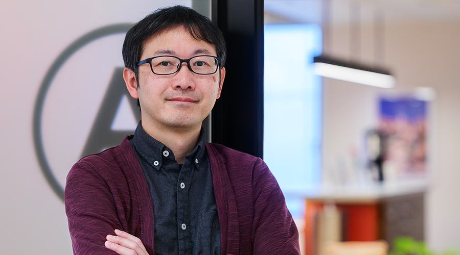
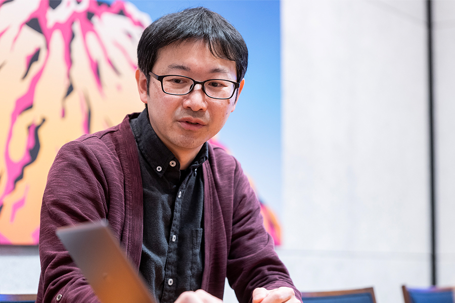
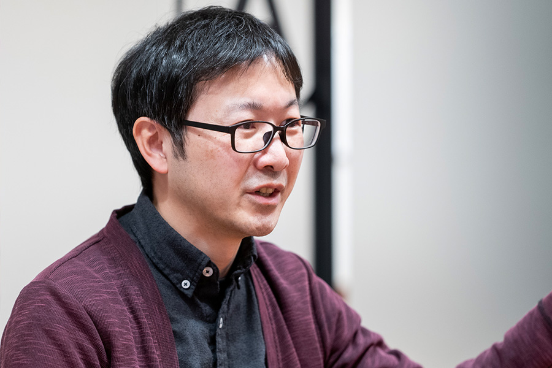

大企業のリソースを活かし切り、スペシャリストとして変革をリードしたい

山添 隆文
株式会社NTTドコモ R&D戦略部 社会実装推進担当 シニアエキスパート/Senior Principal Data Scientist
2004年岐阜大学工学研究科応用情報学科修了後、NTTドコモ東海に入社。子会社情報システム部、法人営業部門を経て、株式会社NTTドコモへ。サービスイノベーション部を経て現職。2008年IPA未踏スーパークリエータ。
── 現在、NTTドコモの研究開発部門でどのようなお仕事をしていますか。
日本で世界的なスポーツイベントが続きましたし、技術の点でも5Gの立ち上がりや生成AIをはじめとした大きな変化があったことから、技術的にかなり先進的な取り組みができています。例えば、新しいエンタメ体験としてスマートフォンやタブレットを使ったVRソリューションを立ち上げたり、スマートグラスを使った低遅延のライブ映像でマルチアングル体験を提供し、スポーツイベントと組み合わせたりといった試みをしてきました。
現在は、超多人数が参加できるバーチャル空間での人やAIのコミュニケーションを実現する空間プラットフォームや、そこで多数のAIキャラクターが活動できる仕組みづくりなどについて「メタコミュニケーション」というキーコンセプトで設計・開発をリードしており、「MetaMe」というサービスとしてのRelic社からの事業展開等、さまざまな広がりが出てきています。背景となる技術としては、空間コンピューティングや生成AI、Web3関係など多岐に渡ります。例えば、1台のGPUで100人以上の空間コミュニケーションを同時に処理できる技術を開発し、GPU100台で1万人規模の同時アクセスを、スマートフォンやPCといった環境に依存せずに実現する独自のクラウドゲーミング技術や、最近の生成AIの技術トレンドを先取りする形で自律的なAIエージェントを実現する技術開発を行っています。「未来のコミュニケーションをつくる」というチャレンジングなテーマに対して、AI技術をコアとしつつも、さまざまな技術を駆使して実現を目指しています。
── 山添さんは「全手動マリオ」の開発者としても知られていますね。
当時、ニコニコ動画で「全自動マリオ」という動画が流行っていました。マリオを自動でゴールまで導き、その過程を面白く見せるものです。「全自動が流行っているなら、全手動という発想もアリだよね」と考え、画像認識の技術を使って、画面上のマリオを直接手で操作できるシステムを開発しました。Webカメラに向けて手を動かし、下から持ち上げるとマリオがジャンプし、上から押さえると下降するといった動きです。この仕組みは、マリオそのものを直接操作するのではなく、マリオの画像を使って私が作ったプログラムで動かしたものです。ただ、操作が難しくてすぐにやられちゃうんですよ（笑）。そこで、「一度に100人くらいのマリオを投入すれば、敵にやられたり、谷に落ちたりしても何人かは生き残ってゴールにたどり着くんじゃないか」といったチャレンジをしていました。
出所：画像認識で全手動マリオ（YouTube）
そのデモ動画をニコニコ動画に投稿したところ、技術的な先進性もあって大きな反響を呼び、当時の1日あたりの再生記録を更新するほどでした。私の動画は、著作権的には微妙なところはあるものの、画像を一部使って自分でプログラムを組んだものでした。ニコニコ動画で多数公開されていた全自動マリオ系の動画（データを不正に改変したものが多かった）が一気に削除された際に全手動マリオの動画も削除されましたが、のちに任天堂の元社長岩田聡さんがドコモに来社された際に、許可を得て全手動マリオを体験してもらったのは感慨深かったですね。
── 入社後、一貫して研究開発の道を歩んでこられたのですか。
実はそうではないのです。もともと大学院の研究室で画像認識を学んでいて所属研究室がNTTドコモ東海と共同研究をしていたため、東海の研究開発部門勤務を希望していましたが、NTTドコモ東海が地域会社（当時は全国の各地方に本社機能があった）ではなくなって子会社化する入社タイミングだったこともあり、情報システム部門からスタートし、法人営業部門なども経験することになりました。
今につながるきっかけとなった仕事の一つが、地域会社にいるときに、クラウドゲーミングの仕組みをテレビ電話で実現するシステムを作ったことです。テレビ電話のキャラ電というアバター機能に制御信号を埋め込み、受信側で解析してゲーム機を操作する仕組みを構築しました。当時はまだクラウドゲーミングというコンセプトが世の中になく、携帯電話のiアプリで『ドラゴンクエスト2』がプレイされていた時代でしたが、少し裏技的な方法で『ドラゴンクエスト8』を携帯電話で操作するといったチャレンジをしていました。それが社内で注目されたことをきっかけに当時の東海の技術開発室に異動になったものの、異動後にそこが法人営業部門に吸収されることになり、入社後数年は本業の片手間でデコメ絵文字アプリやテレビ電話ソリューションの開発等を行っていました。それらが複数の全国的な施策展開につながったものの、社内的には本業に足し合わせた形での成果としてはなかなか認められなかったので、上記のニコニコ動画での活動など社外で色々成果を出し、未踏採択をきっかけとして本社の研究開発部門への異動となりました。
── NTTドコモ本体の研究開発部門への移動は、業務外の活動や未踏採択もきっかけになったとのことですね。
大組織の希望した部門ではない時期も、腐ることなく本業プラスアルファの活動で目立つ成果を上げてこられたのはなぜでしょうか。
未踏に採択されたことは大きなターニングポイントになりました。ニコニコ動画に投稿していた全手動マリオの背景にある技術を、システムとしてフレームワーク化する形で未踏に応募しました。具体的には、「画像認識を使った操作特性に合わせた物理シミュレーションエンジン」というテーマです。当時、物理シミュレーションエンジンやゲームエンジンはまだ一般的ではありませんでしたが、「フレームワークとして整備する」ことを目標にして取り組んだのです。全手動マリオというエンタメ性の強いものがきっかけではありましたが、裏側にある技術テーマは硬派です。当時の未踏は「人材育成と発掘」というコンセプトを打ち出した頃で、私は「くすぶっていた、大企業の技術者が発掘された」というストーリーで、IPA（情報処理推進機構）から講演やインタビューを依頼されることもありました。未踏での活動はオープンに情報公開されるので、社内の研究開発部門にいる人から「ドコモ東海に面白い人がいるから話を聞いてみたい」と注目されました。
それをきっかけに本体であるNTTドコモの研究開発部門に移籍となり、画像認識プロジェクトを立ち上げる取り組みにつながったのです。確かに新卒ですぐには研究開発部門配属にはなりませんでしたし、法人営業を経験する時期もありましたが、作りたいもの自体は自分で作れるので、私自身意外と迷いはありませんでした。希望したポジションを得ることは簡単ではありませんでしたが、技術に特化した人材にも適した居場所がある環境ですし、何より大きな予算で大きな影響を与えられるポテンシャルを感じていたからこそ、個人としての活動も含めて前向きにもの作りを続けてこられたのだと思います。 なお、未踏プロジェクトの成果はソフトウェア資産としてNTTドコモに売却し、個人活動から会社での業務としての取り組みにすることができ、会社の予算を使って様々な成果も出しています。更にそれが2020年前後の日本で開催された世界的なスポーツイベントでの５G訴求施策の企画化などにもつながっています。

その他、「デバイスWeb APIコンソーシアム」の設立を主導し、IoTに関する国際標準化といった活動も行ってきました。その当時、スマートウォッチをはじめとしてスマートフォンに接続できるデバイスが次々と出てきていた時期で、デバイスで機械学習用のデータ収集をしようと考えたものの各メーカーがバラバラな規格や仕組みで開発していて、統一性がありませんでした。そこで、データの扱いを共通化・抽象化できないかと考え、スマートフォンをIoTのゲートウェイとして機能させ、規格や開発環境に依存せずにいろんなデバイスを統合的に扱えるシステムを考案しました。単にゲートウェイを設けるだけでなく、スマートフォン内で動く仮想的なウェブサーバーとして動作する仕組みを開発したのです。例えばAndroidやiPhoneのWebブラウザからの「明かりをつける」という命令だけで、天井の照明でもスマートフォンのライトでも、操作対象を選ぶだけで動作する、とか。この取り組みは通信キャリアから注目され、KDDIやソフトバンクを含めて通信キャリアやメーカー等100社以上を巻き込んだコンソーシアムに繋がっていきました。コンソーシアム形成にあたっては、大企業ならではの企業のつながりのほか、未踏事業での人脈や経験も大いに役立ちました。
── なぜエンジニアになり、どう強みを育ててきたのですか。
もの作りの人としてのルーツは、父親にあります。父は内装業を営む職人でした。大臣表彰や知事表彰されるほど優秀な職人で、もの作りの人として、父を超えたいという思いは今でもあります。大学院の研究室から一貫してAI・画像認識をキーワードとしたキャリアになっていますが、実は、特にこだわりがないことも強みかもしれません。社内でクラウドを主導し、NTTドコモで初めてAWSをサービスに導入する一方で、エッジコンピューティングという言葉がない頃に「そもそもクラウドではなく端末側で処理すればよいのでは」といった逆の考えを持ちこんだりしていました。今どうなっているかではなく、未来志向で柔軟に切り替えて考えるタイプだと思います。
子供の頃はゲームに興味がありましたが、ゲームデザインがしたいわけではなく、「ゼロから新しい考え方のエンジンをつくる」「仕組みそのものを考える」といったことが自分の興味の源だと気づけたことは良かったと思っています。技術トレンドの先取り好きで、ディープラーニングも早々に社内に働きかけていたり、最近も生成AIのプロンプトソンなども社内で最初に行ったりしました。自分でもはっきり分からないのですが、私が興味を持ったことが、後で流行り出すことは意外と多いと感じます。
── 今後、どうありたいですか。

これまで転職や起業という選択肢を考えたこともありましたが、今の会社で自由に取り組めていますし、マネジメントへの興味は薄く、起業すると管理の業務も必要になりますから、結局今の環境が最良だと思っています。NTTドコモは大企業ではありますが、会社に在籍しながら未踏にチャレンジでき、未踏プロジェクトの成果を会社に買い取ってもらうことができたほどです。
最近はNTTグループ全体で技術者のキャリアパスがかなり進化していて、力を発揮しやすい制度設計にもなってきています。私以外にも、入社してから量子コンピューティングのテーマで未踏に採択された技術者がいます。エンジニアの活躍場所として、起業やベンチャーという方向は確かにあります。ただ、「腕に自信のあるエンジニア」にとって、技術を活かし切る環境のある大企業は、一つの有力な選択肢になるのではないかと思っています。私自身は、これからも大きなリソースを最大限活用し、世の中のインフラに関わるサービスを通じてインパクトのある仕事を楽しんでいきたいと思います。
企画・取材・編集 清水隆史